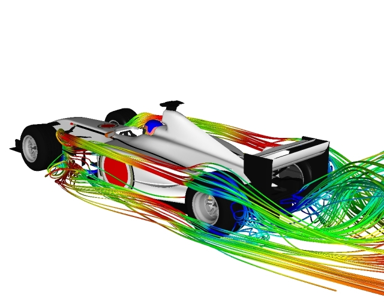

What Happened to Advantage CFD?
"The light that burns twice as bright burns half as long, and you have burned so very, very brightly...Revel in your time."
- Tyrell (Joe Turkel), BladeRunner (1982)
It appears that the Computational Fluid Dynamics (CFD) consultancy to the cars is gone.
F1 Car by Advantage CFDSymscape does not hold the copyright on this picture.
Advantage CFD’s (ACFD) website now (February 2007) hosts the following message:
"Following a review of Advantage CFD activity, the provision of external CFD consultancy services will be terminated on 31 March 2007. This will enable the Honda Racing F1 Team to devote all of its CFD resources to its race objectives."
Robustly led by Rob Lewis, ACFD started life in late 1997 within the now defunct Reynard Motorsport group. From the mid 1990's to the early 2000's Reynard chassis dominated Champ Car. The Reynard tradition of winning the first race of each race series it entered emboldened it to negotiate a well-funded entry into Formula 1 in partnership with British American Tobacco (BAT). So from the ashes of the Tyrell F1 Team, purchased to ensure the lucrative TV money for its first season poured into a swollen money pot, emerged British American Racing (BAR).
Backed by BAR and Reynard Motorsport, ACFD was born. Its mission: To be the premier CFD consultancy for the motor racing industry. As Reynard's light started to fade and was ultimately extinguished by bankruptcy in 2002, BAR took ownership of ACFD. With little success on the racetrack (except for 2004, with a 2nd place in the F1 constructors' championship) BAT's support for BAR waned and so began a Honda takeover, first with the engine in 2000, then a 45% ownership stake in 2004, and finally the entire team in 2005.
ACFD was no shrinking violet. It tackled full car simulations of Champ Cars and F1 cars right from its early days, showing the skeptics that excellent agreement with wind-tunnel model data was possible through elegant and efficient meshing strategies. It expanded its external consultancy to include non-motor sport applications such as wind turbines and blood flow through arteries.
What set ACFD apart from its peers was its combination of photo-realistic and CFD-generated imagery worthy of any marketing department. Imagine racing-cars in full-race livery with streamlines caught in the wing tip vortices emanating from the rear wing of an F1 car. ACFD did – and more.
Ferrari, Aston Martin, Honda – giants of motor racing, and ACFD worked with them all; well at least on their virtual cars. It wasn’t long before the media recognized ACFD too. Race Car Engineering (a preeminent motor racing publication) has published numerous ACFD authored articles and graphics. The recently published (2006) book Competition Car Aerodynamics: A practical handbook is all the more enlightening thanks to the extensive use of ACFD studies and graphics. Maybe therein lies a fitting finale for the consultancy that dared to be different: the entire ACFD website, preserved at its peak (studies, graphics, etc), on a DVD included with the book.
Farewell ACFD, we'll remember your rigorous professionalism and great visuals. Thanks for your insights and the ride.
Feedback
Questions? Ideas? Problems?

Recent blog posts
- CFD Simulates Distant Past
- Background on the Caedium v6.0 Release
- Long-Necked Dinosaurs Succumb To CFD
- CFD Provides Insight Into Mystery Fossils
- Wind Turbine Design According to Insects
- Runners Discover Drafting
- Wind Tunnel and CFD Reveal Best Cycling Tuck
- Active Aerodynamics on the Lamborghini Huracán Performante
- Fluidic Logic
- Stonehenge Vortex Revealed as April Fools' Day Distortion Field
 Get our Blog feed
Get our Blog feed
Comments
Website Taken Down
It appears that the Advantage CFD url
http://www.advantage-cfd.co.uk/is now occupied by an insurance company! However, thanks to the Internet Archive Wayback Machine the fossilized remains of the website as of March 08, 2005 can still be viewed.Formula 1 Aerodynamics
Find out more about Formula 1 aerodynamics.
They're Back!
The brain trust (Rob Lewis et al) behind Advantage CFD are back with a new independent CFD consultancy called TotalSim.
Brawn GP Now in Charge
After a string of poor results, Honda pulled out of F1 in late 2008, only for a new team to emerge from its ashes - the Brawn GP Formula 1 Team. Headed by Ross Brawn, the new team has quickly established itself (thanks to Honda's development through 2008 and generous buyout terms extended to Brawn) as the top team so far in 2009.
A new engine deal with Mercedes (the same engine used by McLaren) and an innovative interpretation of the new 2009 diffuser rules has seen Brawn GP take a commanding lead in the drivers' and constructors' championships after the first 3 races of the 2009 season.
Mercedes Take Over for 2010
Mercedes GP bought out Brawn GP prior to the start of the 2010 F1 season. The other big news was the signing of 7 times F1 World Champion Michael Schumacher to drive for the team - ending his 4 year retirement. The team also signed up Nico Rosberg from Williams to complete an all German driver line up.
Contrary to expectations it was Rosberg who consistently led home Schumacher throughout the 2010 season.
They are now TotalSim
They are now TotalSim http://www.totalsimulation.co.uk/